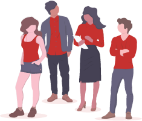

Xtrem Reading Read 2 books in 1 hour
A technique that allows you to read 2 books
in 1 hour in a collaborative way.
Why you should use it?

Boost your
collective intelligence
Collective intelligence strongly contributes to the shift of knowledge and power from the individual to the collective. Reading collectively helps you being motivated to read more books.
Increase your
book retention
Because you read in a way you will present what you have taken from a book, you will increase your retention from the book.
Do not read for
nothing anymore
Filter your entire library in a few sessions and prioritize your next readings.
How to?

Each participant brings a book
Bring the book that you really want to read in a near future.

Share your choices
- Pitch your book
- Explain why you really want to read it
- What are your expectations from this book

Define groups of 2 or 3
Based on your interest for each other's groups :
create groups of 2 or 3.

Each participant reads 2 books
- Set the reading time (15' to 25').
- Read it and take notes to be able to explain what you ave learned.
- Read your first book
- Exchange your book with another participant inside your group
- Read the second book
Cross sharing
- Spend 5' per book
- Each reader of the current book explains what they have discovered to the rest of the group.
Rate the book
Each xtrem reader evaluates the book he read.
- Was it easy to read?
- Would I recommend it?
Facilitation tips
Pace
Pace is really important during a session
but be careful, don't oppress people
by repeating the time elapsed or left.
Display a timer instead on a big screen for example.
Board
After each session you can feed a physical or virtual board to categorize books you have read. You can use "recommendation" for the columns names and "easy to read" as labels like in this example.
Music
Try to listen to music during a session. It can help people to focus. Us no but you can try it.